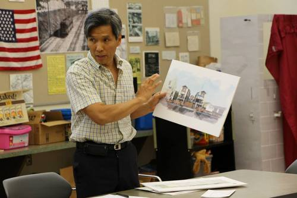

LA32NC Weighs Small Lot Development Proposal
LA32 Neighborhood Council’s (NC) Land Use Committee held a special meeting July 17 to hear public comment on a developer’s proposal to demolish a 93 year old Craftsman style home located at 5639 Huntington Drive to make way for 9 new single family homes. The multiple dwellings could be erected on the 13,600 square foot lot under the City’s Small Lot Development Ordinance which has been exploited heavily in recent years in areas such as Silver Lake and Echo Park.

While Developer Nathanal Lau stated he “decided not to make the development too hip” to respect the neighborhood, which includes a number of Craftsman era homes, a rendering of the proposed multistory development shows an assortment of details ranging from imitation Craftsman window and door frames to the now ubiquitous faux modernist horizontal plank fencing.The property and existing home fall within what could become El Sereno’s first historic district, the proposed Berkshire Craftsman and Revival Bungalow District currently under consideration by the City Council. Historic preservation overlay zones are intended to preserve the neighborhood’s heritage and character by protecting historic homes and encouraging their maintenance and renovation.
The development proposal first came before the Committee in June but, hearing that no outreach had been done to neighboring property owners, Board Members scheduled a second meeting to hear public comment.
The NC Board will now vote on whether to express support, on behalf of the community, for this project. The Board can be reached via email at: board@la32nc.org